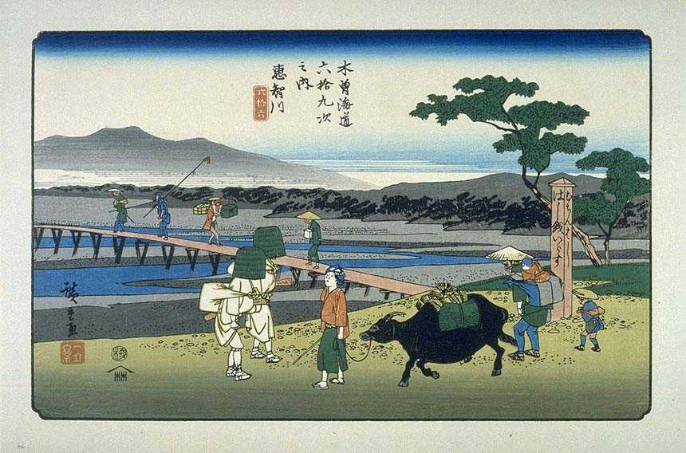
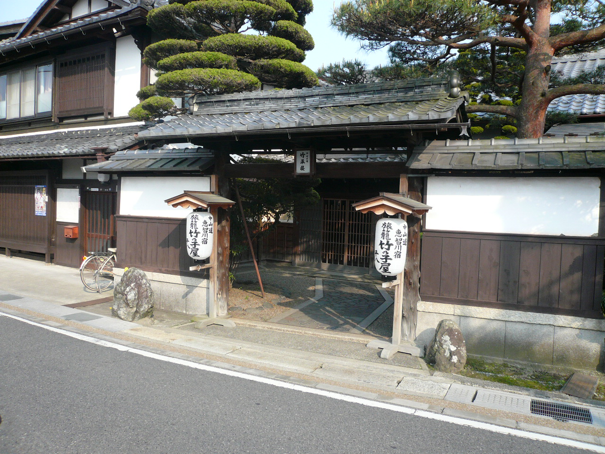

滋賀県 愛荘町
川を渡るにも、お金が要った。
誰でも渡れる橋を、つくる。
米原と京都の間を走る列車は、愛知川を越えます。同じ川を歩いて越えた旅人には、渡るためのお金が必要でした。無料で渡れる橋ができるまでの、小さな町の大きな仕事です。
この町の話を読む ↓約3〜4分で読む / 米原〜京都

写真・図版：Kurage5555 / CC BY-SA 4.0 · 表示枠でトリミング
一つの川が、旅を止める
橋より先に、渡り賃があった。
線路の継ぎ目を感じる間もなく、川は窓の後ろへ流れていきます。列車に乗っていると、川は「越えられる場所」です。ところが歩く旅では、そこから先へ進むための手段を、川岸で手に入れなければなりませんでした。
江戸時代の愛知川では、川越人足や仮設の橋を利用して渡りました。町の博物館は、路銭のない旅人が自力で渡ろうとして急流にのまれたことを伝えています。川は「人取り川」とも呼ばれました。
水の勢いだけが難所をつくったのではありません。渡る方法があっても、その対価を払えるかどうかが旅人を分けていたのです。

写真・図版：Utagawa Hiroshige / Public domain · 表示枠でトリミング
1831年、太平橋
無料は、費用がないことではない。
天保2年（1831）、愛知川村の成宮弥次右衛門らが、近村の有力者とともに太平橋を架けました。渡橋料を取らないことから、無賃橋と呼ばれる橋です。
橋を架けるには資金が必要です。それまでの渡河をめぐる金銭的な補償もありました。町の博物館が紹介する架橋の経緯には、工事を終えるだけでは済まない調整の難しさが残っています。
「渡る人が支払う」という仕組みを変えるには、別の誰かが費用や責任を引き受ける必要がある。無賃橋を読むと、橋の材料だけでなく、誰が支えるかという仕組みも交通の一部だと気づきます。
渡る条件は、どう変わったか
川越人足・仮設橋を利用
路銭のない人には危険な自力渡河も
渡る旅人から渡橋料を取らない
宿場へ、視線を戻す
通り道を、支えてきた町。
無賃橋の系譜は、のちの御幸橋の歴史につながります。ただし、写真の鉄道橋と無賃橋を同じ橋だと思って見ると、この土地の道の重なりは見えなくなります。街道、道路、鉄道は、それぞれ別の条件で川を越えてきました。
愛知川宿に目を向ければ、旅人が泊まり、商いが行われた町の側の時間があります。通り抜ける人にとっての一地点が、暮らす人には、仕事と生活の続く場所だったのです。

写真・図版：Douggers / CC BY 3.0 · 表示枠でトリミング
次にこの川を越えるとき
渡れる日常の、向こう側。
無賃橋を知ったあとなら、車窓に現れる橋も、少し違って見えるかもしれません。橋があることと、それを使えること。その二つをつないだ人々の仕事が、愛知川にはありました。
宿場を歩き、町の手仕事に触れ、自宅で使うものを選ぶ。降りる予定のなかった町との関わりは、一度の寄り道や、一枚の麻布から始めることもできます。
この話の出典・写真について
- 愛荘町立歴史文化博物館・令和3年度夏季特別展 — 無賃橋と御幸橋の系譜。
- 特別展「愛智河架橋略史」解説 — 川越人足・仮設橋、1831年の架橋、資金と補償。
- 愛荘町「近江上布」 — 湖東の麻織物と町の産業。
- 近江上布伝統産業会館 — ショップと施設所在地。
- Kurage5555 / CC BY-SA 4.0 · 表示枠でトリミング。画像はWikimedia Commonsから取得。元画像を改変せず、表示枠でトリミング。
- Utagawa Hiroshige / Public domain · 表示枠でトリミング。画像はWikimedia Commonsから取得。元画像を改変せず、表示枠でトリミング。
- Douggers / CC BY 3.0 · 表示枠でトリミング。画像はWikimedia Commonsから取得。元画像を改変せず、表示枠でトリミング。
2026年10月24日確認。公開資料に基づく構成。現地取材・撮影は行っていません。